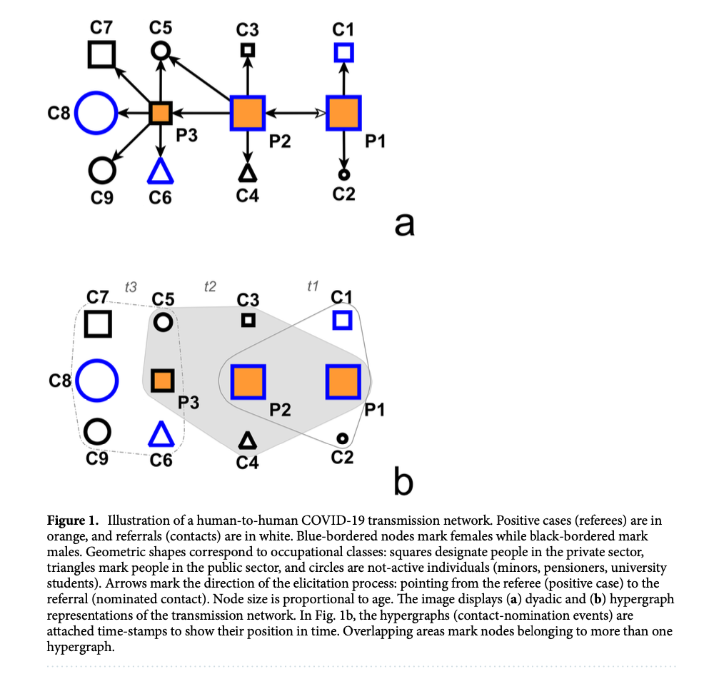
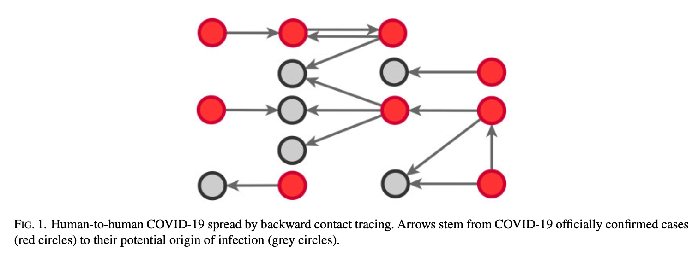
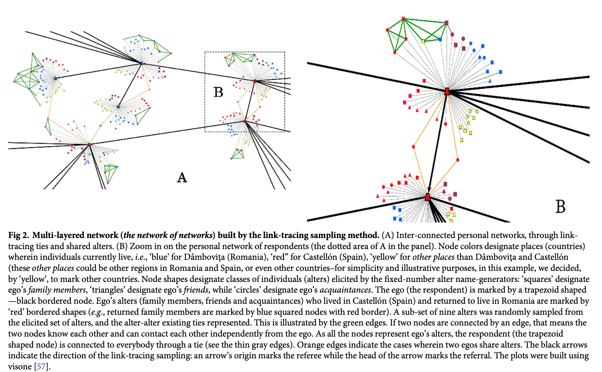
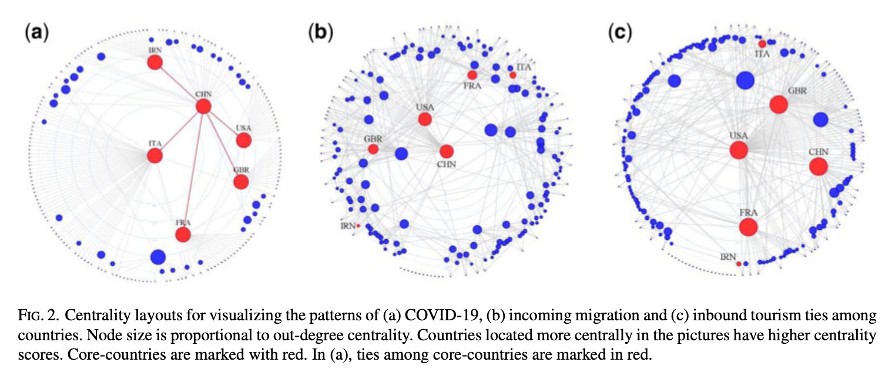
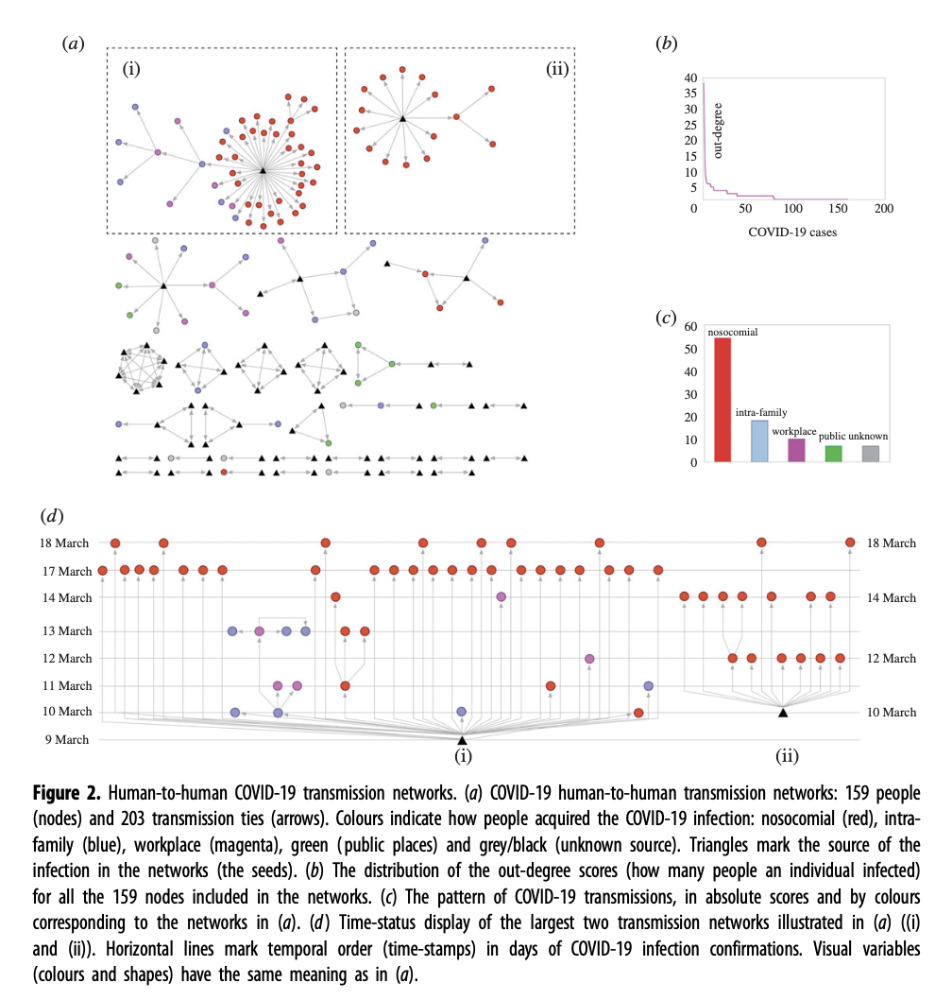
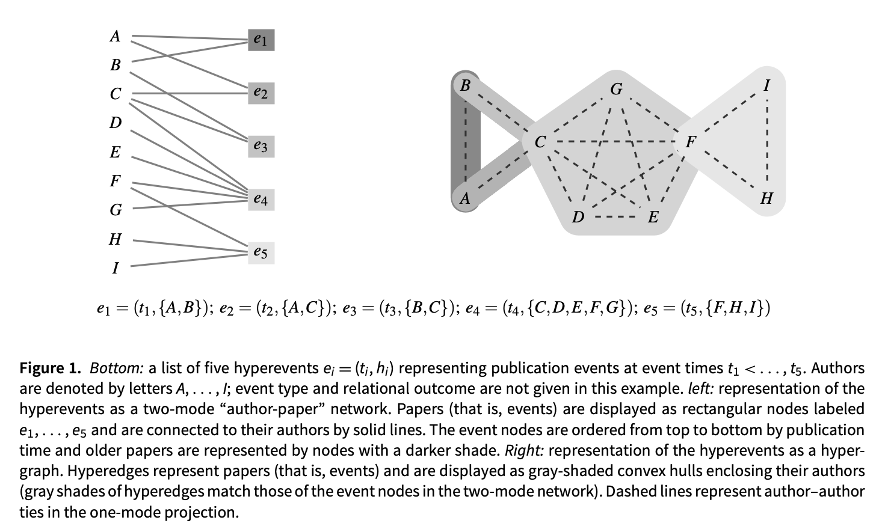
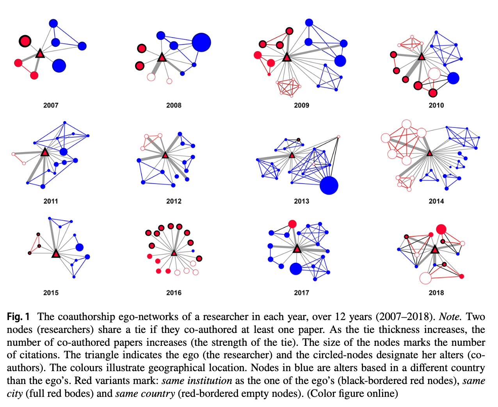
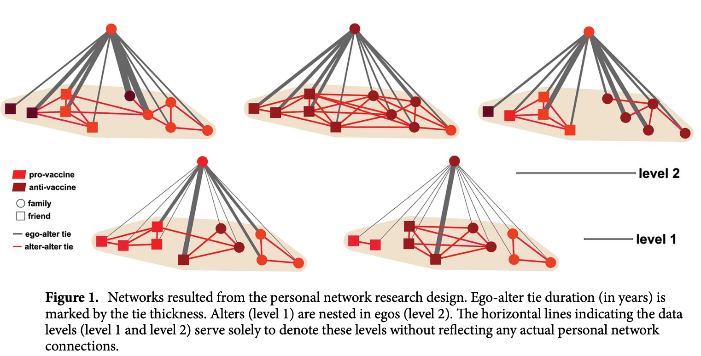

Network analysis: lab meeting 01
Introduction lab meeting
Short bio Marian-Gabriel Hâncean (he/him) is a computational sociologist (practitioner) and a network scientist. His research integrates methodologies from sociology, data science, and computer science to analyze human behavior through the detection and analysis of complex network patterns. He employs network science and computational sociology to explore the interplay between network structures, social selection, and social influence. Recently, his work has focused on applying advanced computational models, such as Relational Hyperevent Models (RHEM), to study phenomena like virus spreading in socio-centric networks, patterns of scientific collaboration, and the science of team science. His research combines theoretical and computational approaches to examine the mutual dynamics between relational event data (social interactions) and relational states (social structures), providing insights into areas such as epidemiology and public health. His current projects involve computational analyses of cancer and cardiovascular risk factors within panel personal network data observed in different living labs. His work underlines a multidisciplinary approach, bridging the gap between computational methods in social sciences and traditional network analysis techniques, and contributes to the broader field of computer science by developing models applicable in areas like public health, organizational studies, and collaborative networks.
1 Lab overview
1.1 Administrative aspects
The Network analysis: pattern detection, briefly hereafter netA, is an introductory interdisciplinary lab that gives the basic concepts and analysis techniques in social network analysis (sna).
The participants to this lab will learn how to identify key actors and groups in social networks, to detect and measure fundamental network structures, and to fit statistical models to network data.
netA is a hands-on lab seeking to teach students how to perform network analysis using R.
At the end of the lab, students will be able to design and implement a small social network analysis research project.
Various examples of published network research are available on my webpage; click here
Lab meetings are scheduled each Monday, in 90 Panduri Blv. building (Faculty of Sociology and Social Work), room 207, between 18:00 - 20:00.
For participation, students are recommended to bring their own laptop PC. Yet, if that is not possible, they can use the computers from the room.
netA participants can make appoints and discuss the problems they encounter with the lab exercises using this email address gabriel.hancean@sas.unibuc.ro. I will respond only to emails sent to this email address.
1.2 Evaluation
There are two components in the evaluation:
a written test (at the end of the semester): 5 points
a network project (students will present their projects in the last two meetings of the semester; students can work alone or in groups of maximum 3 students per project): 5 points
NB: Students can improve their grade by actively participating during the semester at the lab meetings (e.g., present lab exercises, participate to special events organized in relation to the
netAlab etc.). They can collect 2.5 points
2 Lab organization
2.1 Tentative schedule
Week 1, September 30, 2024
Administrative meeting: course presentation, student evaluation, mandatory & recommended readings, course design
Introduction to software tools that may be useful for performing network research (e.g.,
R,RStudio,UCINET,visone,Network Canvas)Providing the social context in which network research is being practiced
After this meeting, you will find out: the course requirements and design, how to access course resources, which are some of the most frequently used software tools for performing network research
Week 2, October 7, 2024
Introduction to network analysis
Why and what are social networks?
Types of relations and goals of the network analysis
Network variables as predictors and dependent variables
Installing
RandRStudio, and providing an overall presentation ofRStudio

hyper graphsThe source of the Image 1 is Hâncean, MG., Lerner, J., Perc, M. et al. Occupations and their impact on the spreading of COVID-19 in urban communities. Sci Rep 12, 14115 (2022) Click here
Week 3, October 14, 2024
Network analysis vocabulary
Graphs, adjacency matrices, paths and network components etc.
Running simple codes in
RStudio

observed networkThe source of the Image 2 is Hâncean MG, Lerner J, Perc M, et al. The role of age in the spreading of COVID-19 across a social network in Bucharest. J Complex Netw. 9,4, cnab026 (2021) Click here
Week 4, October 21, 2024
Network research designs
Experiments and field studies; sociocentric, egocentric and personal network designs; types of nodes and ties; actor attributes
Rexercises: creating data files (network data management)

link tracing samplingThe source of the Image 3 is Hâncean MG, Lubbers MJ, Molina JL (2021) Measuring transnational social fields through binational link-tracing sampling. PLOS ONE 16(6): e0253042) Click here
Week 5, October 28, 2024
Sampling and boundaries
Ethics in network studies
Rexercises: creating visualizations (network data visualizations)
Week 6, November 4, 2024
Network questions; Question format; Respondent burden;
Validity and reliability; Network visual scales; Data from electronic sources;
Rexercises: network correlations
Week 7, November 11, 2024
Data management
Importing and exporting network data into
RData transformations
Converting attributes to networks
Converting to one-mode data
Rexercises
Week 8, November 18, 2024
Network visualizations
Layouts
Embedding node and ties attributes
Visual variables
Biases in visualizations
Rexercises

centrality layoutsThe source of the Image 4 is Marian-Gabriel Hâncean, Mitja Slavinec, Matjaž Perc, The impact of human mobility networks on the global spread of COVID-19, Journal of Complex Networks, 8, 6, cnaa041 (2020) Click here
Week 9, November 25, 2024
Network measurements
The idea of centrality
(un)directed and valued(binary) networks
Negative and positive networks
Centrality measurements
Centrality layouts
Rexercises

super-spreaderThe source of the Image 5 is Hâncean Marian-Gabriel, Perc Matjaž and Lerner Jürgen. Early spread of COVID-19 in Romania: imported cases from Italy and human-to-human transmission networks. R. Soc. Open Sci. 7,200780 (2020) Click here
Week 10, December 2, 2024
Network analysis
Level of analysis: node, dyad, network
Explaining the formation process of networks (antecedents)
Networks as predictors (contagion)
Rexercises

co-affiliation and RHEMsThe source of the Image 6 is Lerner J, Hâncean M-G. Micro-level network dynamics of scientific collaboration and impact: Relational hyperevent models for the analysis of coauthor networks. Network Science, 11, 1:5–35 (2023) Click here
Week 11, December 9, 2024
Regression with networks
Rexercises

The source of the Image 7 is Hâncean, MG., Perc, M. & Lerner, J. The coauthorship networks of the most productive European researchers. Scientometrics 126, 201–224 (2021) Click here
Week 12, December 16, 2024
Regression with networks
Rexercises

The source of the Image 8 is Hâncean, MG., Lerner, J., Perc, M. et al. Assortative mixing of opinions about COVID-19 vaccination in personal networks. Sci Rep 14, 3385 (2024) Click here
Week 13, January 6, 2025
Students’ presentations: students will present their micro-research projects (maximum 3 students per project). The order of the presentations will be alphabetical.
Students are required to prepare presentations about their network analysis. Specifically, they are expected to collect, analyze, and visualize network data. Findings should be reported. Students will receive feedback after their presentation. Students may work independently or in groups (maximum 3 people).
Presentations should be delivered in the form of
Rfiles (students will run their codes and explain the results)
Week 14, January 13, 2025
Students’ presentations: students will present their micro-research projects (maximum 3 students per project). The order of the presentations will be alphabetical.
Students are required to prepare presentations about their network analysis. Specifically, they are expected to collect, analyze, and visualize network data. Findings should be reported. Students will receive feedback after their presentation. Students may work independently or in groups (maximum 3 people).
Presentations should be delivered in the form of
Rfiles (students will run their codes and explain the results)
2.2 References
Mandatory readings
Hanneman, Robert A., and Mark Riddle. 2005. Introduction to Social Network Methods. University of California, Riverside. Click here
Rawlings, Craig M., Jeffrey A. Smith, James Moody, and Daniel A. McFarland. 2023. Network Analysis: Integrating Social Network Theory, Method, and Application with R. New York: Cambridge University Press. Click here
SP Borgatti, MG Everett, JC Johnson, F Agneessens, Analyzing social networks using R (Sage, 2022) Click here
Recommended readings
SP Borgatti, A Mehra, DJ Brass, G Labianca, Network analysis in the social sciences, Science 323, 892 - 895, 2009. Click here
JL Molina, SP Borgatti, Moral bureaucracies and social network research, Social networks 67, 13-19, 2021 Click here
D Lazer et al, Computational social science, Science 323, 721 - 723, 2009 Click here
R Tutorial on W3Schools Click here
swirl,learnRinRClick hereSI O’Donoghue, BF Baldi, SJ Clark, AE Darling, JM Hogan, S Kaur et al. Visualization of biomedical data. Annual Review of Biomedical Data Science, 1, 275 - 304, 2018 Click here
Hâncean, MG., Lerner, J., Perc, M. et al. Occupations and their impact on the spreading of COVID-19 in urban communities. Sci Rep 12, 14115 (2022) Click here
Hâncean MG, Lerner J, Perc M, et al. The role of age in the spreading of COVID-19 across a social network in Bucharest. J Complex Netw. 9,4, cnab026 (2021) Click here
Hâncean, MG., Lerner, J., Perc, M. et al. Assortative mixing of opinions about COVID-19 vaccination in personal networks. Sci Rep 14, 3385 (2024) Click here
Hâncean, MG., Perc, M. & Lerner, J. The coauthorship networks of the most productive European researchers. Scientometrics 126, 201–224 (2021) Click here
Lerner J, Hâncean M-G. Micro-level network dynamics of scientific collaboration and impact: Relational hyperevent models for the analysis of coauthor networks. Network Science, 11, 1:5–35 (2023) Click here
Marian-Gabriel Hâncean, Mitja Slavinec, Matjaž Perc, The impact of human mobility networks on the global spread of COVID-19, Journal of Complex Networks, 8, 6, cnaa041 (2020) Click here
Hâncean MG, Lubbers MJ, Molina JL (2021) Measuring transnational social fields through binational link-tracing sampling. PLOS ONE 16(6): e0253042) Click here